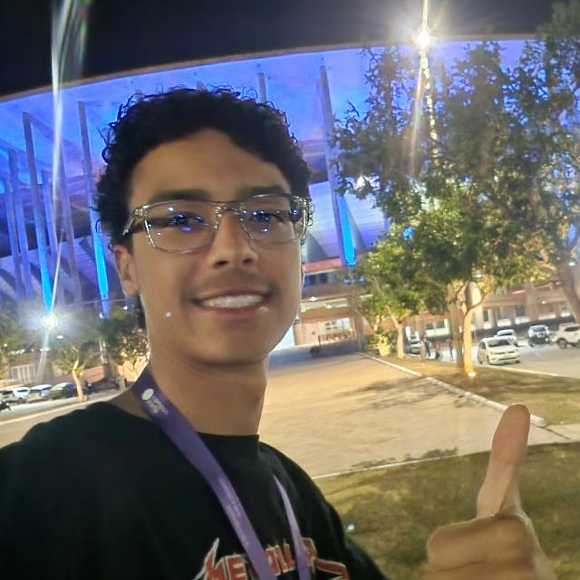
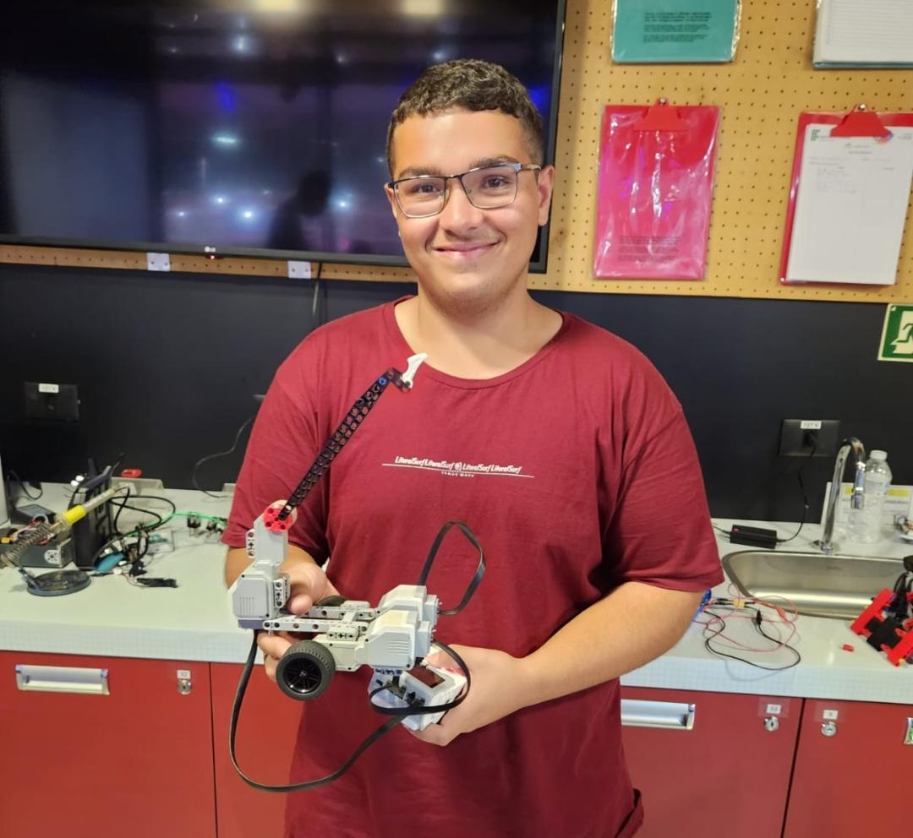
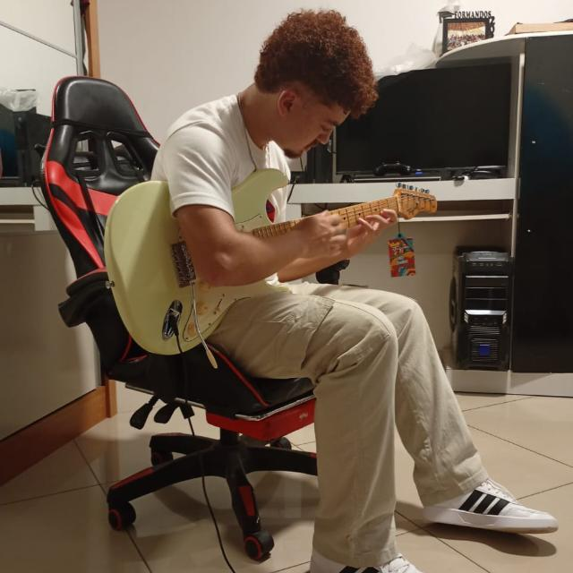

Somos estudantes do 1º período de Ciência da Computação da FUMEC, unidos pela paixão por programação e pelo desejo de compartilhar as belezas de Minas Gerais com o mundo.
Este projeto nasceu da vontade de combinar nosso aprendizado em desenvolvimento web com nosso amor por nossa terra. Cada linha de código foi escrita com dedicação, cada imagem escolhida com carinho, e cada descrição elaborada com orgulho mineiro.
Nosso objetivo é facilitar o acesso às informações turísticas e inspirar mais pessoas a conhecerem as maravilhas que Minas Gerais tem a oferecer. Esperamos que você aproveite sua jornada por nosso estado tanto quanto nós aproveitamos criar este guia!
Quatro estudantes dedicados que transformaram uma ideia em realidade

Responsável por coordenar a equipe, organizar o desenvolvimento do projeto e garantir que todas as partes trabalhem em conjunto para que o resultado final funcione de forma integrada e eficiente.

Principal responsável pela estruturação das páginas com HTML e pela estilização com CSS, transformando ideias em interfaces claras, organizadas e funcionais.

Responsável pela construção da base do código e pela implementação da responsividade, criando uma estrutura sólida que facilita a manutenção, expansão e integração dos recursos do projeto.

Responsável pela criação dos textos, identidade visual e materiais gráficos do projeto, desenvolvendo conteúdos e imagens que fortalecem a comunicação com o público.